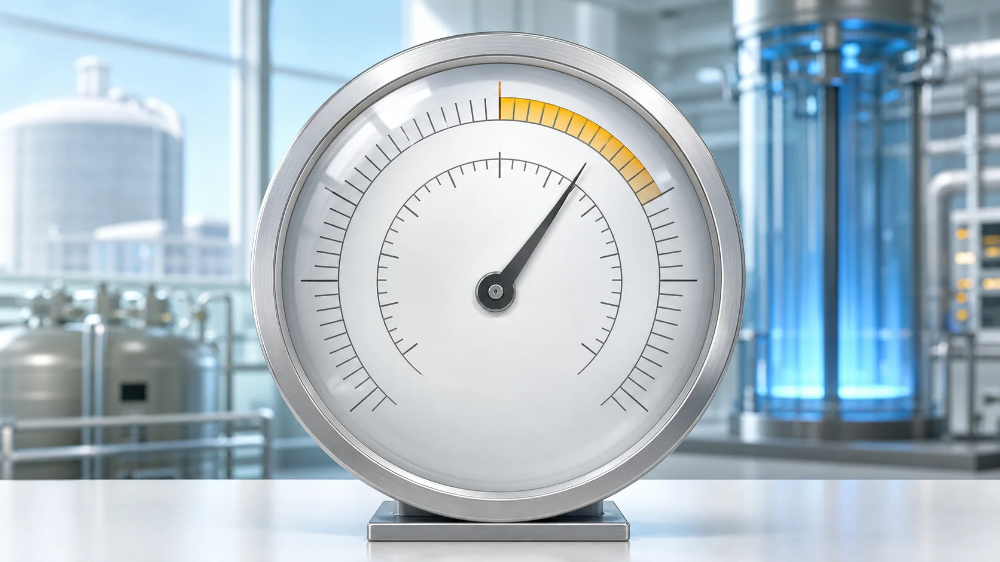
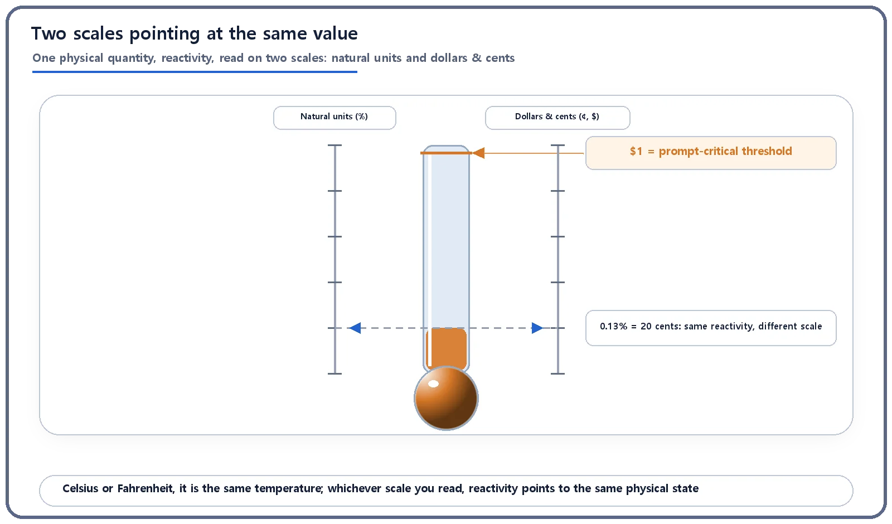
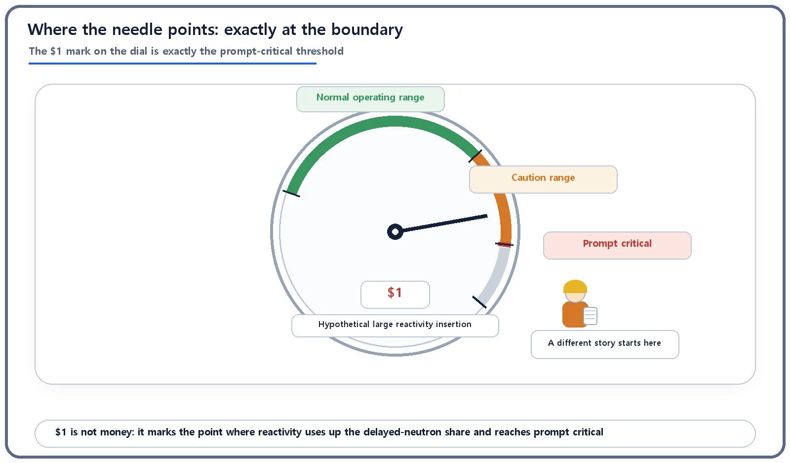

Reactor Kinetics & Reactivity · 102
Why a Thermometer Has Two Scales — Dollars and Cents, Another Ruler for Reactivity
Like Celsius and Fahrenheit, two scales read the same reactivity. Unlike them, the dollar's size changes from reactor to reactor.

Reactivity can be read in natural units (% or pcm) or in dollars and cents. One dollar is defined as reactivity equal to the effective delayed neutron fraction β, exactly the prompt-critical point, and a cent is one hundredth of that. Because β differs between reactors and fuels, the dollar is a scale engraved for each reactor, which makes it a common yardstick for the margin to prompt critical.
Two rulers for one fever
Think of a fever thermometer. Some show only Celsius (°C); in an American TV drama, someone says they "ran a fever of 101," meaning Fahrenheit (°F). 36.5 °C and 97.7 °F are exactly the same body temperature. Only the ruler differs; how hot the body is does not. And the conversion between them always uses the same formula (°F = °C × 9/5 + 32).
Would you believe a reactor has a "dual scale" too? Reactivity is the number that tells you how far a reactor is from perfect balance (criticality). It turns out there is more than one ruler for that single physical quantity. Today's subject is the one with the oddest name: dollars and cents.
Reactivity in one breath
You only need one idea to follow along: reactivity is a number showing how far the reactor sits above balance (the growing side) or below it (the shrinking side), and that number can already be written as a percentage (%) or in pcm (per cent mille, one hundred-thousandth, a very finely divided scale). Think of that as the Celsius scale. Dollars and cents are the Fahrenheit scale for the same value.
Did you know there's a second scale?
Imagine reading one reactivity value on two scales at once. The left scale shows the natural units we already know (% or pcm); the right shows dollars and cents. Both point to the same spot where the reactor stands right now, just as 36.5 °C and 97.7 °F mark the same line on a thermometer.

Why bother with a second scale? The answer lies in one very special boundary.
The slack delayed neutrons give, and the moment it runs out
When a nucleus fissions, neutrons fly out, and almost all of them are prompt neutrons, released at the instant of fission. A tiny fraction (less than 1% of the total), however, are delayed neutrons: they come out a little later, as fission by-products undergo radioactive decay, anywhere from under a second to tens of seconds afterward. They are a drop in the bucket by number, yet they are what make a reactor slow enough for people to handle. Thanks to that short delay, when reactivity changes a little, reactor power responds over seconds and minutes rather than in an instant.
The fraction of delayed neutrons is called the effective delayed neutron fraction, usually written β (beta). It is known to be roughly 0.65% for common low-enriched uranium (U-235) cores, and much smaller, around 0.2%, for cores with a large share of plutonium. These are approximate textbook values; the exact figure depends on the fuel's composition, burnup and neutron spectrum.
Now suppose reactivity keeps growing until it equals β. From that moment, the reactor can stay critical (or go beyond) on prompt neutrons alone, with no help from delayed neutrons at all. This boundary is called prompt critical. Cross it, and the reactor no longer gets the "relaxed delay" that delayed neutrons provide; it moves on the very short time scale of prompt neutrons alone (tens of microseconds to milliseconds), so its response to reactivity changes becomes dramatically faster.
And it is exactly this point, where reactivity ρ equals β, that was agreed to be called one dollar ($1). So $1 is not an arbitrary number. It is the scale mark defined to sit at "the point where the slack bought by delayed neutrons is used up completely," that is, prompt critical:
ρ in dollars = ρ / β

A cent is one hundredth of that
Once you have the dollar, the cent is easy: 1 cent (¢) is one hundredth of $1. For a reactor whose β is 0.65%, $1 is about 650 pcm, and 1 cent, a hundredth of that, is about 6.5 pcm. (That conversion is an illustration that assumes β ≈ 0.65%, not an exact value for any specific reactor design.) That is why the reactivity change from nudging a control rod is often quoted as so many cents, or tens of cents. The name is borrowed from money, but no money changes hands. Dollars and cents are simply a dimensionless ratio, a scale for the physical quantity called reactivity.
| Scale mark | Definition | If β ≈ 0.65% (illustration) |
|---|---|---|
| $1 | ρ = β (prompt critical) | about 650 pcm |
| 1 cent | 0.01 × β | about 6.5 pcm |
The one way it's not like a thermometer
Here is the twist in the analogy. The Celsius-to-Fahrenheit formula is the same everywhere. The conversion between natural units and dollars is not. Because the size of "one dollar" is β itself, a different reactor or a different fuel puts $1 at a different spot on the natural-unit scale. As we saw, a low-enriched uranium core has β of about 0.65%, while a plutonium-heavy core has a much smaller β of about 0.2%. The same "$1" sits on top of different natural-unit values.
In other words, the dollar scale is less like a dual-scale thermometer with a fixed conversion factor and more like a custom thermometer whose markings are engraved anew for each reactor. And that is exactly what makes dollars useful. From natural units (% or pcm) alone, you can't see at a glance how close a value is to that reactor's prompt-critical point; you would need to know β to work it out. In dollars, the sense that "the closer to $1, the closer to prompt critical" holds for every reactor and every fuel. Dollars and cents are a common yardstick for comparing, across different reactors, how much margin is left before prompt critical.
So why do engineers use this scale?
When analyzing the reactivity change made by inserting or withdrawing a single control rod (control rod worth), or a reactivity-related accident scenario, both plant practice and textbooks often state the value in dollars and cents alongside pcm. The exact pcm figure matters, of course, but dollars give an intuitive feel for how much a change eats into the margin to prompt critical. Commercial reactors are designed and operated with ample margin so that reactivity insertions in normal operation come nowhere near $1. Approaching or exceeding $1 lies far outside normal operation, in the territory of accident analysis that is handled with particular care.
Easy-to-miss points
Dollars and cents borrow a currency's name but have nothing to do with actual money. And $1 itself does not mean "accident" or "danger." It is simply the definition of a physical boundary: the point at which prompt neutrons alone can sustain criticality. Because crossing it changes how fast the reactor responds, the principle in design and operation is to keep well away from this threshold. And reactivity never measures the size of the electrical output (MW).
The takeaways
- Besides natural units (% or pcm), reactivity can be expressed on another scale: dollars and cents.
- $1 is defined to sit exactly where reactivity equals the effective delayed neutron fraction (β), that is, prompt critical; 1 cent is one hundredth of that.
- Unlike Celsius and Fahrenheit, the conversion factor between natural units and dollars (β) changes with the reactor and the fuel, so the dollar is a relative scale engraved for each reactor.
- That is why dollars and cents serve as a common language for intuitively comparing the margin to prompt critical across different reactors.
Why does that prompt-critical boundary get such special treatment? How it fundamentally changes the way a reactor behaves is a story of its own.